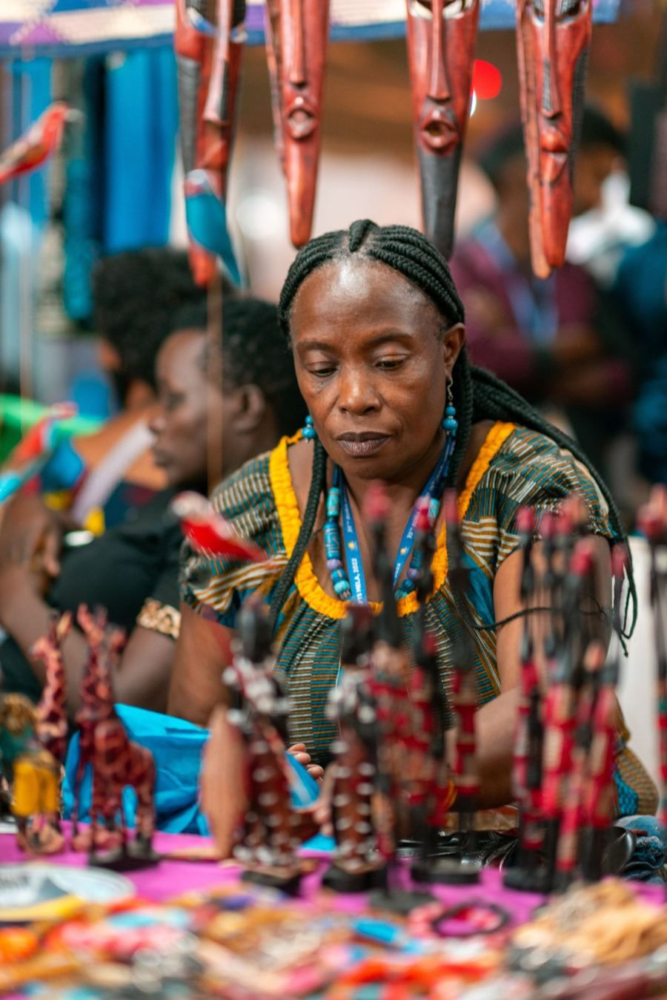

Compétences Repérées
Savoir-faire Confection & Technique
Patronage sur mesure ●●●
Coupe sans perte wax ●●●
Couture à la machine ●●●
Finition & Assemblage ●●○
Compétences Terrain & Commerce
Négociation de tissus ●●●
Gestion d'atelier ●●○
Relation clientèle ●●●
WhatsApp Business ●●○
Badges & Certifications
Boussole des Talents validée
Diagnostic des savoir-faire informels
Atelier Pratique Maître
Certifié par la Maison Ahouefa
Parrainage Mentor Actif
Suivie par Babacar Samb (Directeur)
Réalisations & Créations Récentes 4 projets

Collection Cotonou Chic
Ensemble de 8 pièces combinant wax authentique et lin écru, coupe moderne cintrée.

Nuancier Motifs & Assemblages
Création de patrons optimisés pour zéro déchet textile lors de la découpe en atelier.

Sacs & Pochettes Assortis
Maroquinerie d'appoint en cuir et chutes de wax cousues main avec fermoirs renforcés.

Stand Démonstration Marché Dantokpa
Présentation commerciale et vente directe de créations artisanales lors de la foire locale.
Parcours & Expériences de Terrain
2026 — En cours
Formation Haute Couture & Modélisme
Cap Formation PHAR • En partenariat avec les ateliers locaux de Cotonou
2024 — 2025
Praticienne en Atelier & Vente Directe
Atelier familial et distribution au marché • Patronage, découpe, gestion des clientes
2023
Initiation aux Techniques Textiles & Tissage
Apprentissage traditionnel des points et finitions à la main